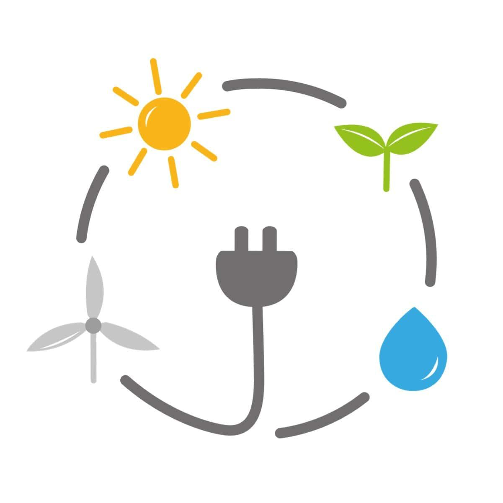

🌱
Vide un Ilgtspējība
Atjaunojamie energoresursi un to ietekme uz vidi
Atjaunojamie energoresursi ir enerģijas avoti, kas dabā pastāvīgi atjaunojas, piemēram, saules, vēja, hidro, ģeotermālā un biomasa.
Tie tiek uzskatīti par ilgtspējīgiem, jo to izmantošana nerada neatgriezenisku resursu izsīkšanu.

- ✅ Mazāks piesārņojums – samazina siltumnīcefekta gāzu emisijas, kas veicina klimata pārmaiņas.
- ✅ Dabas resursu saglabāšana – fosilie kurināmie (ogles, nafta, gāze) netiek izsmelti.
- ✅ Mazāka ietekme uz ekosistēmām – pareizi plānota atjaunojamo resursu izmantošana mazina kaitējumu dabai.